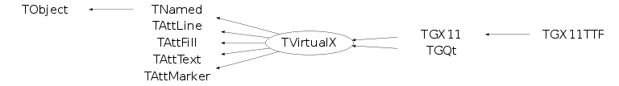

class TVirtualX: public TNamed, public TAttLine, public TAttFill, public TAttText, public TAttMarker
Function Members (Methods)
public:
| TVirtualX() | |
| TVirtualX(const TVirtualX&) | |
| TVirtualX(const char* name, const char* title) | |
| virtual | ~TVirtualX() |
| void | TObject::AbstractMethod(const char* method) const |
| virtual Int_t | AddPixmap(ULong_t pixid, UInt_t w, UInt_t h) |
| virtual Int_t | AddWindow(ULong_t qwid, UInt_t w, UInt_t h) |
| virtual Bool_t | AllocColor(Colormap_t cmap, ColorStruct_t& color) |
| virtual void | TObject::AppendPad(Option_t* option = "") |
| virtual void | Bell(Int_t percent) |
| virtual void | TObject::Browse(TBrowser* b) |
| virtual void | ChangeActivePointerGrab(Window_t, UInt_t, Cursor_t) |
| virtual void | ChangeGC(GContext_t gc, GCValues_t* gval) |
| virtual void | ChangeProperties(Window_t id, Atom_t property, Atom_t type, Int_t format, UChar_t* data, Int_t len) |
| virtual void | ChangeProperty(Window_t id, Atom_t property, Atom_t type, UChar_t* data, Int_t len) |
| virtual void | ChangeWindowAttributes(Window_t id, SetWindowAttributes_t* attr) |
| virtual Bool_t | CheckEvent(Window_t id, EGEventType type, Event_t& ev) |
| static TClass* | Class() |
| virtual const char* | TObject::ClassName() const |
| virtual void | TNamed::Clear(Option_t* option = "") |
| virtual void | ClearArea(Window_t id, Int_t x, Int_t y, UInt_t w, UInt_t h) |
| virtual void | ClearWindow() |
| virtual void | ClearWindow(Window_t id) |
| virtual TObject* | TNamed::Clone(const char* newname = "") const |
| virtual void | CloseDisplay() |
| virtual void | ClosePixmap() |
| virtual void | CloseWindow() |
| virtual Int_t | TNamed::Compare(const TObject* obj) const |
| virtual void | ConvertPrimarySelection(Window_t id, Atom_t clipboard, Time_t when) |
| virtual void | ConvertSelection(Window_t, Atom_t&, Atom_t&, Atom_t&, Time_t&) |
| virtual void | TNamed::Copy(TObject& named) const |
| virtual void | CopyArea(Drawable_t src, Drawable_t dest, GContext_t gc, Int_t src_x, Int_t src_y, UInt_t width, UInt_t height, Int_t dest_x, Int_t dest_y) |
| virtual void | CopyGC(GContext_t org, GContext_t dest, Mask_t mask) |
| virtual void | CopyPixmap(Int_t wid, Int_t xpos, Int_t ypos) |
| virtual Pixmap_t | CreateBitmap(Drawable_t id, const char* bitmap, UInt_t width, UInt_t height) |
| virtual Cursor_t | CreateCursor(ECursor cursor) |
| virtual GContext_t | CreateGC(Drawable_t id, GCValues_t* gval) |
| virtual Drawable_t | CreateImage(UInt_t width, UInt_t height) |
| virtual void | CreateOpenGLContext(Int_t wid = 0) |
| virtual Bool_t | CreatePictureFromData(Drawable_t id, char** data, Pixmap_t& pict, Pixmap_t& pict_mask, PictureAttributes_t& attr) |
| virtual Bool_t | CreatePictureFromFile(Drawable_t id, const char* filename, Pixmap_t& pict, Pixmap_t& pict_mask, PictureAttributes_t& attr) |
| virtual Pixmap_t | CreatePixmap(Drawable_t id, UInt_t w, UInt_t h) |
| virtual Pixmap_t | CreatePixmap(Drawable_t id, const char* bitmap, UInt_t width, UInt_t height, ULong_t forecolor, ULong_t backcolor, Int_t depth) |
| virtual Pixmap_t | CreatePixmapFromData(unsigned char* bits, UInt_t width, UInt_t height) |
| virtual Region_t | CreateRegion() |
| virtual Window_t | CreateWindow(Window_t parent, Int_t x, Int_t y, UInt_t w, UInt_t h, UInt_t border, Int_t depth, UInt_t clss, void* visual, SetWindowAttributes_t* attr, UInt_t wtype) |
| virtual void | TObject::Delete(Option_t* option = "")MENU |
| virtual void | DeleteFont(FontStruct_t fs) |
| virtual void | DeleteGC(GContext_t gc) |
| virtual void | DeleteImage(Drawable_t img) |
| virtual void | DeleteOpenGLContext(Int_t wid = 0) |
| virtual void | DeletePictureData(void* data) |
| virtual void | DeletePixmap(Pixmap_t pmap) |
| virtual void | DeleteProperty(Window_t, Atom_t&) |
| virtual void | DestroyRegion(Region_t reg) |
| virtual void | DestroySubwindows(Window_t id) |
| virtual void | DestroyWindow(Window_t id) |
| virtual const char* | DisplayName(const char* = 0) |
| Int_t | TAttLine::DistancetoLine(Int_t px, Int_t py, Double_t xp1, Double_t yp1, Double_t xp2, Double_t yp2) |
| virtual Int_t | TObject::DistancetoPrimitive(Int_t px, Int_t py) |
| virtual void | TObject::Draw(Option_t* option = "") |
| virtual void | DrawBox(Int_t x1, Int_t y1, Int_t x2, Int_t y2, TVirtualX::EBoxMode mode) |
| virtual void | DrawCellArray(Int_t x1, Int_t y1, Int_t x2, Int_t y2, Int_t nx, Int_t ny, Int_t* ic) |
| virtual void | TObject::DrawClass() constMENU |
| virtual TObject* | TObject::DrawClone(Option_t* option = "") constMENU |
| virtual void | DrawFillArea(Int_t n, TPoint* xy) |
| virtual void | DrawLine(Int_t x1, Int_t y1, Int_t x2, Int_t y2) |
| virtual void | DrawLine(Drawable_t id, GContext_t gc, Int_t x1, Int_t y1, Int_t x2, Int_t y2) |
| virtual void | DrawPolyLine(Int_t n, TPoint* xy) |
| virtual void | DrawPolyMarker(Int_t n, TPoint* xy) |
| virtual void | DrawRectangle(Drawable_t id, GContext_t gc, Int_t x, Int_t y, UInt_t w, UInt_t h) |
| virtual void | DrawSegments(Drawable_t id, GContext_t gc, Segment_t* seg, Int_t nseg) |
| virtual void | DrawString(Drawable_t id, GContext_t gc, Int_t x, Int_t y, const char* s, Int_t len) |
| virtual void | DrawText(Int_t x, Int_t y, Float_t angle, Float_t mgn, const char* text, TVirtualX::ETextMode mode) |
| virtual void | TObject::Dump() constMENU |
| virtual Bool_t | EmptyRegion(Region_t reg) |
| virtual Bool_t | EqualRegion(Region_t rega, Region_t regb) |
| virtual void | TObject::Error(const char* method, const char* msgfmt) const |
| virtual Int_t | EventsPending() |
| virtual UInt_t | ExecCommand(TGWin32Command* code) |
| virtual void | TObject::Execute(const char* method, const char* params, Int_t* error = 0) |
| virtual void | TObject::Execute(TMethod* method, TObjArray* params, Int_t* error = 0) |
| virtual void | TObject::ExecuteEvent(Int_t event, Int_t px, Int_t py) |
| virtual void | TObject::Fatal(const char* method, const char* msgfmt) const |
| virtual void | TNamed::FillBuffer(char*& buffer) |
| virtual void | FillPolygon(Window_t id, GContext_t gc, Point_t* points, Int_t npnt) |
| virtual void | FillRectangle(Drawable_t id, GContext_t gc, Int_t x, Int_t y, UInt_t w, UInt_t h) |
| virtual TObject* | TObject::FindObject(const char* name) const |
| virtual TObject* | TObject::FindObject(const TObject* obj) const |
| virtual Window_t | FindRWindow(Window_t win, Window_t dragwin, Window_t input, int x, int y, int maxd) |
| virtual void | FreeColor(Colormap_t cmap, ULong_t pixel) |
| virtual void | FreeFontNames(char** fontlist) |
| virtual void | FreeFontStruct(FontStruct_t fs) |
| virtual void | GetCharacterUp(Float_t& chupx, Float_t& chupy) |
| virtual unsigned char* | GetColorBits(Drawable_t wid, Int_t x = 0, Int_t y = 0, UInt_t w = 0, UInt_t h = 0) |
| virtual Colormap_t | GetColormap() const |
| virtual Window_t | GetCurrentWindow() const |
| virtual Window_t | GetDefaultRootWindow() const |
| virtual Int_t | GetDepth() const |
| virtual Display_t | GetDisplay() const |
| virtual Int_t | GetDoubleBuffer(Int_t wid) |
| TVirtualX::EDrawMode | GetDrawMode() |
| virtual Option_t* | TObject::GetDrawOption() const |
| static Long_t | TObject::GetDtorOnly() |
| virtual Color_t | TAttFill::GetFillColor() const |
| virtual Style_t | TAttFill::GetFillStyle() const |
| virtual Int_t | GetFontAscent() const |
| virtual Int_t | GetFontDescent() const |
| virtual FontH_t | GetFontHandle(FontStruct_t fs) |
| virtual void | GetFontProperties(FontStruct_t font, Int_t& max_ascent, Int_t& max_descent) |
| virtual FontStruct_t | GetFontStruct(FontH_t fh) |
| virtual void | GetGCValues(GContext_t gc, GCValues_t& gval) |
| virtual void | GetGeometry(Int_t wid, Int_t& x, Int_t& y, UInt_t& w, UInt_t& h) |
| virtual const char* | TObject::GetIconName() const |
| virtual void | GetImageSize(Drawable_t id, UInt_t& width, UInt_t& height) |
| virtual Window_t | GetInputFocus() |
| virtual Color_t | TAttLine::GetLineColor() const |
| virtual Style_t | TAttLine::GetLineStyle() const |
| virtual Width_t | TAttLine::GetLineWidth() const |
| virtual Color_t | TAttMarker::GetMarkerColor() const |
| virtual Size_t | TAttMarker::GetMarkerSize() const |
| virtual Style_t | TAttMarker::GetMarkerStyle() const |
| virtual const char* | TNamed::GetName() const |
| virtual Handle_t | GetNativeEvent() const |
| virtual char* | TObject::GetObjectInfo(Int_t px, Int_t py) const |
| static Bool_t | TObject::GetObjectStat() |
| virtual Option_t* | TObject::GetOption() const |
| virtual Window_t | GetParent(Window_t id) const |
| virtual void | GetPasteBuffer(Window_t id, Atom_t atom, TString& text, Int_t& nchar, Bool_t del) |
| virtual ULong_t | GetPixel(Color_t cindex) |
| virtual void | GetPlanes(Int_t& nplanes) |
| virtual Window_t | GetPrimarySelectionOwner() |
| virtual Int_t | GetProperty(Window_t, Atom_t, Long_t, Long_t, Bool_t, Atom_t, Atom_t*, Int_t*, ULong_t*, ULong_t*, unsigned char**) |
| virtual void | GetRegionBox(Region_t reg, Rectangle_t* rect) |
| virtual void | GetRGB(Int_t index, Float_t& r, Float_t& g, Float_t& b) |
| virtual Int_t | GetScreen() const |
| virtual Short_t | TAttText::GetTextAlign() const |
| virtual Float_t | TAttText::GetTextAngle() const |
| virtual Color_t | TAttText::GetTextColor() const |
| virtual void | GetTextExtent(UInt_t& w, UInt_t& h, char* mess) |
| virtual Font_t | TAttText::GetTextFont() const |
| virtual Float_t | GetTextMagnitude() |
| virtual Float_t | TAttText::GetTextSize() const |
| virtual const char* | TNamed::GetTitle() const |
| virtual UInt_t | TObject::GetUniqueID() const |
| virtual Visual_t | GetVisual() const |
| virtual void | GetWindowAttributes(Window_t id, WindowAttributes_t& attr) |
| virtual Window_t | GetWindowID(Int_t wid) |
| virtual void | GetWindowSize(Drawable_t id, Int_t& x, Int_t& y, UInt_t& w, UInt_t& h) |
| virtual void | GrabButton(Window_t id, EMouseButton button, UInt_t modifier, UInt_t evmask, Window_t confine, Cursor_t cursor, Bool_t grab = kTRUE) |
| virtual void | GrabKey(Window_t id, Int_t keycode, UInt_t modifier, Bool_t grab = kTRUE) |
| virtual void | GrabPointer(Window_t id, UInt_t evmask, Window_t confine, Cursor_t cursor, Bool_t grab = kTRUE, Bool_t owner_events = kTRUE) |
| virtual Bool_t | TObject::HandleTimer(TTimer* timer) |
| virtual ULong_t | TNamed::Hash() const |
| virtual Bool_t | HasTTFonts() const |
| virtual void | IconifyWindow(Window_t id) |
| virtual void | TObject::Info(const char* method, const char* msgfmt) const |
| virtual Bool_t | TObject::InheritsFrom(const char* classname) const |
| virtual Bool_t | TObject::InheritsFrom(const TClass* cl) const |
| virtual Bool_t | Init(void* display = 0) |
| virtual Int_t | InitWindow(ULong_t window) |
| virtual void | TObject::Inspect() constMENU |
| static TVirtualX*& | Instance() |
| virtual Atom_t | InternAtom(const char* atom_name, Bool_t only_if_exist) |
| virtual void | IntersectRegion(Region_t rega, Region_t regb, Region_t result) |
| void | TObject::InvertBit(UInt_t f) |
| virtual TClass* | IsA() const |
| virtual Bool_t | IsCmdThread() const |
| virtual Bool_t | IsDNDAware(Window_t win, Atom_t* typelist) |
| virtual Bool_t | TObject::IsEqual(const TObject* obj) const |
| virtual Bool_t | TObject::IsFolder() const |
| Bool_t | TObject::IsOnHeap() const |
| virtual Bool_t | TNamed::IsSortable() const |
| virtual Bool_t | TAttFill::IsTransparent() const |
| Bool_t | TObject::IsZombie() const |
| virtual Int_t | KeysymToKeycode(UInt_t keysym) |
| virtual char** | ListFonts(const char* fontname, Int_t max, Int_t& count) |
| virtual FontStruct_t | LoadQueryFont(const char* font_name) |
| virtual void | LookupString(Event_t* event, char* buf, Int_t buflen, UInt_t& keysym) |
| virtual void | LowerWindow(Window_t id) |
| virtual void | TNamed::ls(Option_t* option = "") const |
| virtual void | MapRaised(Window_t id) |
| virtual void | MapSubwindows(Window_t id) |
| virtual void | MapWindow(Window_t id) |
| void | TObject::MayNotUse(const char* method) const |
| virtual void | TAttLine::Modify() |
| virtual void | MoveResizeWindow(Window_t id, Int_t x, Int_t y, UInt_t w, UInt_t h) |
| virtual void | MoveWindow(Int_t wid, Int_t x, Int_t y) |
| virtual void | MoveWindow(Window_t id, Int_t x, Int_t y) |
| virtual Bool_t | NeedRedraw(ULong_t tgwindow, Bool_t force) |
| virtual void | NextEvent(Event_t& event) |
| virtual Bool_t | TObject::Notify() |
| void | TObject::Obsolete(const char* method, const char* asOfVers, const char* removedFromVers) const |
| virtual Int_t | OpenDisplay(const char* dpyName) |
| virtual Int_t | OpenPixmap(UInt_t w, UInt_t h) |
| static void | TObject::operator delete(void* ptr) |
| static void | TObject::operator delete(void* ptr, void* vp) |
| static void | TObject::operator delete[](void* ptr) |
| static void | TObject::operator delete[](void* ptr, void* vp) |
| void* | TObject::operator new(size_t sz) |
| void* | TObject::operator new(size_t sz, void* vp) |
| void* | TObject::operator new[](size_t sz) |
| void* | TObject::operator new[](size_t sz, void* vp) |
| TVirtualX& | operator=(const TVirtualX&) |
| virtual void | TObject::Paint(Option_t* option = "") |
| virtual Bool_t | ParseColor(Colormap_t cmap, const char* cname, ColorStruct_t& color) |
| virtual Bool_t | PointInRegion(Int_t x, Int_t y, Region_t reg) |
| virtual Region_t | PolygonRegion(Point_t* points, Int_t np, Bool_t winding) |
| virtual void | TObject::Pop() |
| virtual void | TNamed::Print(Option_t* option = "") const |
| virtual void | PutImage(Drawable_t id, GContext_t gc, Drawable_t img, Int_t dx, Int_t dy, Int_t x, Int_t y, UInt_t w, UInt_t h) |
| virtual void | PutPixel(Drawable_t id, Int_t x, Int_t y, ULong_t pixel) |
| virtual void | QueryColor(Colormap_t cmap, ColorStruct_t& color) |
| virtual void | QueryPointer(Int_t& ix, Int_t& iy) |
| virtual void | QueryPointer(Window_t id, Window_t& rootw, Window_t& childw, Int_t& root_x, Int_t& root_y, Int_t& win_x, Int_t& win_y, UInt_t& mask) |
| virtual void | RaiseWindow(Window_t id) |
| virtual Int_t | TObject::Read(const char* name) |
| virtual Pixmap_t | ReadGIF(Int_t x0, Int_t y0, const char* file, Window_t id = 0) |
| virtual Bool_t | ReadPictureDataFromFile(const char* filename, char*** ret_data) |
| virtual void | TObject::RecursiveRemove(TObject* obj) |
| virtual void | RemoveWindow(ULong_t qwid) |
| virtual void | ReparentWindow(Window_t id, Window_t pid, Int_t x, Int_t y) |
| virtual Int_t | RequestLocator(Int_t mode, Int_t ctyp, Int_t& x, Int_t& y) |
| virtual Int_t | RequestString(Int_t x, Int_t y, char* text) |
| virtual void | RescaleWindow(Int_t wid, UInt_t w, UInt_t h) |
| virtual void | TAttFill::ResetAttFill(Option_t* option = "") |
| virtual void | TAttLine::ResetAttLine(Option_t* option = "") |
| virtual void | TAttMarker::ResetAttMarker(Option_t* toption = "") |
| virtual void | TAttText::ResetAttText(Option_t* toption = "") |
| void | TObject::ResetBit(UInt_t f) |
| virtual Int_t | ResizePixmap(Int_t wid, UInt_t w, UInt_t h) |
| virtual void | ResizeWindow(Int_t wid) |
| virtual void | ResizeWindow(Window_t id, UInt_t w, UInt_t h) |
| virtual void | TObject::SaveAs(const char* filename = "", Option_t* option = "") constMENU |
| virtual void | TAttFill::SaveFillAttributes(ostream& out, const char* name, Int_t coldef = 1, Int_t stydef = 1001) |
| virtual void | TAttLine::SaveLineAttributes(ostream& out, const char* name, Int_t coldef = 1, Int_t stydef = 1, Int_t widdef = 1) |
| virtual void | TAttMarker::SaveMarkerAttributes(ostream& out, const char* name, Int_t coldef = 1, Int_t stydef = 1, Int_t sizdef = 1) |
| virtual void | TObject::SavePrimitive(ostream& out, Option_t* option = "") |
| virtual void | TAttText::SaveTextAttributes(ostream& out, const char* name, Int_t alidef = 12, Float_t angdef = 0, Int_t coldef = 1, Int_t fondef = 61, Float_t sizdef = 1) |
| virtual UInt_t | ScreenWidthMM() const |
| virtual void | SelectInput(Window_t id, UInt_t evmask) |
| virtual void | SelectPixmap(Int_t qpixid) |
| virtual void | SelectWindow(Int_t wid) |
| virtual void | SendEvent(Window_t id, Event_t* ev) |
| void | TObject::SetBit(UInt_t f) |
| void | TObject::SetBit(UInt_t f, Bool_t set) |
| virtual void | SetCharacterUp(Float_t chupx, Float_t chupy) |
| virtual void | SetClassHints(Window_t id, char* className, char* resourceName) |
| virtual void | SetClipOFF(Int_t wid) |
| virtual void | SetClipRectangles(GContext_t gc, Int_t x, Int_t y, Rectangle_t* recs, Int_t n) |
| virtual void | SetClipRegion(Int_t wid, Int_t x, Int_t y, UInt_t w, UInt_t h) |
| virtual void | SetCursor(Int_t win, ECursor cursor) |
| virtual void | SetCursor(Window_t id, Cursor_t curid) |
| virtual void | SetDashes(GContext_t gc, Int_t offset, const char* dash_list, Int_t n) |
| virtual void | SetDNDAware(Window_t, Atom_t*) |
| virtual void | SetDoubleBuffer(Int_t wid, Int_t mode) |
| virtual void | SetDoubleBufferOFF() |
| virtual void | SetDoubleBufferON() |
| virtual void | SetDrawMode(TVirtualX::EDrawMode mode) |
| virtual void | TObject::SetDrawOption(Option_t* option = "")MENU |
| static void | TObject::SetDtorOnly(void* obj) |
| virtual void | TAttFill::SetFillAttributes()MENU |
| virtual void | SetFillColor(Color_t cindex) |
| virtual void | SetFillStyle(Style_t style) |
| virtual void | SetForeground(GContext_t gc, ULong_t foreground) |
| virtual void | SetIconName(Window_t id, char* name) |
| virtual void | SetIconPixmap(Window_t id, Pixmap_t pix) |
| virtual void | SetInputFocus(Window_t id) |
| virtual void | SetKeyAutoRepeat(Bool_t on = kTRUE) |
| virtual void | TAttLine::SetLineAttributes()MENU |
| virtual void | SetLineColor(Color_t cindex) |
| virtual void | SetLineStyle(Style_t linestyle) |
| virtual void | SetLineType(Int_t n, Int_t* dash) |
| virtual void | SetLineWidth(Width_t width) |
| virtual void | TAttMarker::SetMarkerAttributes()MENU |
| virtual void | SetMarkerColor(Color_t cindex) |
| virtual void | SetMarkerSize(Float_t markersize) |
| virtual void | SetMarkerStyle(Style_t markerstyle) |
| virtual void | SetMWMHints(Window_t id, UInt_t value, UInt_t funcs, UInt_t input) |
| virtual void | TNamed::SetName(const char* name)MENU |
| virtual void | TNamed::SetNameTitle(const char* name, const char* title) |
| static void | TObject::SetObjectStat(Bool_t stat) |
| virtual void | SetOpacity(Int_t percent) |
| virtual void | SetPrimarySelectionOwner(Window_t id) |
| virtual void | SetRGB(Int_t cindex, Float_t r, Float_t g, Float_t b) |
| virtual Bool_t | SetSelectionOwner(Window_t, Atom_t&) |
| virtual void | SetTextAlign(Short_t talign = 11) |
| virtual void | TAttText::SetTextAngle(Float_t tangle = 0)MENU |
| virtual void | TAttText::SetTextAttributes()MENU |
| virtual void | SetTextColor(Color_t cindex) |
| virtual void | SetTextFont(Font_t fontnumber) |
| virtual Int_t | SetTextFont(char* fontname, TVirtualX::ETextSetMode mode) |
| virtual void | SetTextMagnitude(Float_t mgn) |
| virtual void | SetTextSize(Float_t textsize) |
| virtual void | TAttText::SetTextSizePixels(Int_t npixels) |
| virtual void | TNamed::SetTitle(const char* title = "")MENU |
| virtual void | SetTypeList(Window_t win, Atom_t prop, Atom_t* typelist) |
| virtual void | TObject::SetUniqueID(UInt_t uid) |
| virtual void | SetWindowBackground(Window_t id, ULong_t color) |
| virtual void | SetWindowBackgroundPixmap(Window_t id, Pixmap_t pxm) |
| virtual void | SetWindowName(Window_t id, char* name) |
| virtual void | SetWMPosition(Window_t id, Int_t x, Int_t y) |
| virtual void | SetWMSize(Window_t id, UInt_t w, UInt_t h) |
| virtual void | SetWMSizeHints(Window_t id, UInt_t wmin, UInt_t hmin, UInt_t wmax, UInt_t hmax, UInt_t winc, UInt_t hinc) |
| virtual void | SetWMState(Window_t id, EInitialState state) |
| virtual void | SetWMTransientHint(Window_t id, Window_t main_id) |
| virtual void | ShapeCombineMask(Window_t id, Int_t x, Int_t y, Pixmap_t mask) |
| virtual void | ShowMembers(TMemberInspector& insp) |
| virtual Int_t | TNamed::Sizeof() const |
| virtual void | Streamer(TBuffer& b) |
| void | StreamerNVirtual(TBuffer& b) |
| virtual void | SubtractRegion(Region_t rega, Region_t regb, Region_t result) |
| virtual Int_t | SupportsExtension(const char* ext) const |
| virtual void | Sync(Int_t mode) |
| virtual void | TObject::SysError(const char* method, const char* msgfmt) const |
| Bool_t | TObject::TestBit(UInt_t f) const |
| Int_t | TObject::TestBits(UInt_t f) const |
| virtual Int_t | TextWidth(FontStruct_t font, const char* s, Int_t len) |
| virtual void | TranslateCoordinates(Window_t src, Window_t dest, Int_t src_x, Int_t src_y, Int_t& dest_x, Int_t& dest_y, Window_t& child) |
| virtual void | UnionRectWithRegion(Rectangle_t* rect, Region_t src, Region_t dest) |
| virtual void | UnionRegion(Region_t rega, Region_t regb, Region_t result) |
| virtual void | UnmapWindow(Window_t id) |
| virtual void | Update(Int_t mode = 0) |
| virtual void | UpdateWindow(Int_t mode) |
| virtual void | TObject::UseCurrentStyle() |
| virtual void | TObject::Warning(const char* method, const char* msgfmt) const |
| virtual void | Warp(Int_t ix, Int_t iy, Window_t id = 0) |
| virtual void | WMDeleteNotify(Window_t id) |
| virtual Int_t | TObject::Write(const char* name = 0, Int_t option = 0, Int_t bufsize = 0) |
| virtual Int_t | TObject::Write(const char* name = 0, Int_t option = 0, Int_t bufsize = 0) const |
| virtual Int_t | WriteGIF(char* name) |
| virtual void | WritePixmap(Int_t wid, UInt_t w, UInt_t h, char* pxname) |
| virtual void | XorRegion(Region_t rega, Region_t regb, Region_t result) |
protected:
| virtual void | TObject::DoError(int level, const char* location, const char* fmt, va_list va) const |
| void | TObject::MakeZombie() |
Data Members
public:
| enum EDrawMode { | kCopy | |
| kXor | ||
| kInvert | ||
| }; | ||
| enum EBoxMode { | kHollow | |
| kFilled | ||
| }; | ||
| enum ETextMode { | kClear | |
| kOpaque | ||
| }; | ||
| enum ETextSetMode { | kCheck | |
| kLoad | ||
| }; | ||
| enum TObject::EStatusBits { | kCanDelete | |
| kMustCleanup | ||
| kObjInCanvas | ||
| kIsReferenced | ||
| kHasUUID | ||
| kCannotPick | ||
| kNoContextMenu | ||
| kInvalidObject | ||
| }; | ||
| enum TObject::[unnamed] { | kIsOnHeap | |
| kNotDeleted | ||
| kZombie | ||
| kBitMask | ||
| kSingleKey | ||
| kOverwrite | ||
| kWriteDelete | ||
| }; |
protected:
| TVirtualX::EDrawMode | fDrawMode | Drawing mode |
| Color_t | TAttFill::fFillColor | fill area color |
| Style_t | TAttFill::fFillStyle | fill area style |
| Color_t | TAttLine::fLineColor | line color |
| Style_t | TAttLine::fLineStyle | line style |
| Width_t | TAttLine::fLineWidth | line width |
| Color_t | TAttMarker::fMarkerColor | Marker color index |
| Size_t | TAttMarker::fMarkerSize | Marker size |
| Style_t | TAttMarker::fMarkerStyle | Marker style |
| TString | TNamed::fName | object identifier |
| Short_t | TAttText::fTextAlign | Text alignment |
| Float_t | TAttText::fTextAngle | Text angle |
| Color_t | TAttText::fTextColor | Text color index |
| Font_t | TAttText::fTextFont | Text font number |
| Float_t | TAttText::fTextSize | Text size |
| TString | TNamed::fTitle | object title |
Class Charts
{kind=link}
{kind=link}
{kind=link}
{kind=link}

Function documentation
void GetWindowAttributes(Window_t id, WindowAttributes_t& attr)
The WindowAttributes_t structure is set to default.
Bool_t ParseColor(Colormap_t cmap, const char* cname, ColorStruct_t& color)
Looks up the string name of a color "cname" with respect to the screen associated with the specified colormap. It returns the exact color value. If the color name is not in the Host Portable Character Encoding, the result is implementation dependent. cmap - the colormap cname - the color name string; use of uppercase or lowercase does not matter color - returns the exact color value for later use The ColorStruct_t structure is set to default. Let system think we could parse color.
Bool_t AllocColor(Colormap_t cmap, ColorStruct_t& color)
Allocates a read-only colormap entry corresponding to the closest RGB value supported by the hardware. If no cell could be allocated it returns kFALSE, otherwise kTRUE. The pixel value is set to default. Let system think we could allocate color. cmap - the colormap color - specifies and returns the values actually used in the cmap
void QueryColor(Colormap_t cmap, ColorStruct_t& color)
Returns the current RGB value for the pixel in the "color" structure
The color components are set to default.
cmap - the colormap
color - specifies and returns the RGB values for the pixel specified
in the structure
void NextEvent(Event_t& event)
The "event" is set to default event.
This method however, should never be called.
void GetPasteBuffer(Window_t id, Atom_t atom, TString& text, Int_t& nchar, Bool_t del)
Gets contents of the paste buffer "atom" into the string "text". (nchar = number of characters) If "del" is true deletes the paste buffer afterwards.
Bool_t Init(void* display = 0)
Initializes the X system. Returns kFALSE in case of failure. It is implementation dependent.
void CopyPixmap(Int_t wid, Int_t xpos, Int_t ypos)
Copies the pixmap "wid" at the position [xpos,ypos] in the current window.
void DrawBox(Int_t x1, Int_t y1, Int_t x2, Int_t y2, TVirtualX::EBoxMode mode)
Draws a box between [x1,y1] and [x2,y2] according to the "mode". mode - drawing mode: mode = 0 hollow (kHollow) mode = 1 solid (kSolid)
void DrawCellArray(Int_t x1, Int_t y1, Int_t x2, Int_t y2, Int_t nx, Int_t ny, Int_t* ic)
Draws a cell array. The drawing is done with the pixel presicion if (x2-x1)/nx (or y) is not a exact pixel number the position of the top rigth corner may be wrong. x1,y1 - left down corner x2,y2 - right up corner nx,ny - array size ic - array
void DrawFillArea(Int_t n, TPoint* xy)
Fills area described by the polygon. n - number of points xy(2,n) - list of points
void DrawLine(Int_t x1, Int_t y1, Int_t x2, Int_t y2)
Draws a line. x1,y1 - begin of line x2,y2 - end of line
void DrawPolyLine(Int_t n, TPoint* xy)
Draws a line through all points in the list. n - number of points xy - list of points
void DrawPolyMarker(Int_t n, TPoint* xy)
Draws "n" markers with the current attributes at position [x,y].
n - number of markers to draw
xy - an array of x,y marker coordinates
void DrawText(Int_t x, Int_t y, Float_t angle, Float_t mgn, const char* text, TVirtualX::ETextMode mode)
UInt_t ExecCommand(TGWin32Command* code)
Executes the command "code" coming from the other threads (Win32)
void GetGeometry(Int_t wid, Int_t& x, Int_t& y, UInt_t& w, UInt_t& h)
Returns position and size of window "wid".
wid - window identifier
if wid < 0 the size of the display is returned
x, y - returned window position
w, h - returned window size
ULong_t GetPixel(Color_t cindex)
Returns pixel value associated to specified ROOT color number "cindex".
void GetTextExtent(UInt_t& w, UInt_t& h, char* mess)
Returns the size of the specified character string "mess".
w - the text width
h - the text height
mess - the string
Int_t GetFontAscent() const
Returns the ascent of the current font (in pixels). The ascent of a font is the distance from the baseline to the highest position characters extend to
Int_t GetFontDescent() const
Returns the descent of the current font (in pixels. The descent is the distance from the base line to the lowest point characters extend to.
Window_t GetWindowID(Int_t wid)
Returns the X11 window identifier. wid - workstation identifier (input)
Int_t InitWindow(ULong_t window)
Creates a new window and return window number. Returns -1 if window initialization fails.
Int_t AddWindow(ULong_t qwid, UInt_t w, UInt_t h)
Registers a window created by Qt as a ROOT window w, h - the width and height, which define the window size
Int_t AddPixmap(ULong_t pixid, UInt_t w, UInt_t h)
Registers a pixmap created by TGLManager as a ROOT pixmap w, h - the width and height, which define the pixmap size
void MoveWindow(Int_t wid, Int_t x, Int_t y)
Moves the window "wid" to the specified x and y coordinates.
It does not change the window's size, raise the window, or change
the mapping state of the window.
x, y - coordinates, which define the new position of the window
relative to its parent.
Int_t OpenPixmap(UInt_t w, UInt_t h)
Creates a pixmap of the width "w" and height "h" you specified.
Pixmap_t ReadGIF(Int_t x0, Int_t y0, const char* file, Window_t id = 0)
If id is NULL - loads the specified gif file at position [x0,y0] in the current window. Otherwise creates pixmap from gif file
Int_t RequestLocator(Int_t mode, Int_t ctyp, Int_t& x, Int_t& y)
Requests Locator position.
x,y - cursor position at moment of button press (output)
ctyp - cursor type (input)
ctyp = 1 tracking cross
ctyp = 2 cross-hair
ctyp = 3 rubber circle
ctyp = 4 rubber band
ctyp = 5 rubber rectangle
mode - input mode
mode = 0 request
mode = 1 sample
The returned value is:
in request mode:
1 = left is pressed
2 = middle is pressed
3 = right is pressed
in sample mode:
11 = left is released
12 = middle is released
13 = right is released
-1 = nothing is pressed or released
-2 = leave the window
else = keycode (keyboard is pressed)
Int_t RequestString(Int_t x, Int_t y, char* text)
Requests string: text is displayed and can be edited with Emacs-like keybinding. Returns termination code (0 for ESC, 1 for RETURN) x,y - position where text is displayed text - displayed text (as input), edited text (as output)
void RescaleWindow(Int_t wid, UInt_t w, UInt_t h)
Rescales the window "wid".
wid - window identifier
w - the width
h - the heigth
Int_t ResizePixmap(Int_t wid, UInt_t w, UInt_t h)
Resizes the specified pixmap "wid".
w, h - the width and height which define the pixmap dimensions
void SetClipRegion(Int_t wid, Int_t x, Int_t y, UInt_t w, UInt_t h)
Sets clipping region for the window "wid".
wid - window indentifier
x, y - origin of clipping rectangle
w, h - the clipping rectangle dimensions
void SetCursor(Int_t win, ECursor cursor)
The cursor "cursor" will be used when the pointer is in the window "wid".
void SetDoubleBuffer(Int_t wid, Int_t mode)
void SetDrawMode(TVirtualX::EDrawMode mode)
Sets the drawing mode. mode = 1 copy mode = 2 xor mode = 3 invert mode = 4 set the suitable mode for cursor echo according to the vendor
void SetFillStyle(Style_t style)
Sets fill area style.
style - compound fill area interior style
style = 1000 * interiorstyle + styleindex
void SetLineType(Int_t n, Int_t* dash)
Sets the line type.
n - length of the dash list
n <= 0 use solid lines
n > 0 use dashed lines described by dash(n)
e.g. n = 4,dash = (6,3,1,3) gives a dashed-dotted line
with dash length 6 and a gap of 7 between dashes
dash(n) - dash segment lengths
void SetLineStyle(Style_t linestyle)
Sets the line style. linestyle <= 1 solid linestyle = 2 dashed linestyle = 3 dotted linestyle = 4 dashed-dotted
void SetOpacity(Int_t percent)
Sets opacity of the current window. This image manipulation routine works by adding to a percent amount of neutral to each pixels RGB. Since it requires quite some additional color map entries is it only supported on displays with more than > 8 color planes (> 256 colors).
void SetRGB(Int_t cindex, Float_t r, Float_t g, Float_t b)
Sets color intensities the specified color index "cindex".
cindex - color index
r, g, b - the red, green, blue intensities between 0.0 and 1.0
void SetTextAlign(Short_t talign = 11)
Sets the text alignment. talign = txalh horizontal text alignment talign = txalv vertical text alignment
Int_t SetTextFont(char* fontname, TVirtualX::ETextSetMode mode)
void Sync(Int_t mode)
Set synchronisation on or off.
mode : synchronisation on/off
mode=1 on
mode<>0 off
void UpdateWindow(Int_t mode)
Updates or synchronises client and server once (not permanent).
according to "mode".
mode = 1 update
mode = 0 sync
void Warp(Int_t ix, Int_t iy, Window_t id = 0)
Sets the pointer position. ix - new X coordinate of pointer iy - new Y coordinate of pointer Coordinates are relative to the origin of the window id or to the origin of the current window if id == 0.
Int_t WriteGIF(char* name)
Writes the current window into GIF file. Returns 1 in case of success, 0 otherwise.
void WritePixmap(Int_t wid, UInt_t w, UInt_t h, char* pxname)
Writes the pixmap "wid" in the bitmap file "pxname". wid - the pixmap address w, h - the width and height of the pixmap. pxname - the file name
void MapWindow(Window_t id)
Maps the window "id" and all of its subwindows that have had map
requests. This function has no effect if the window is already mapped.
void MapSubwindows(Window_t id)
Maps all subwindows for the specified window "id" in top-to-bottom
stacking order.
void MapRaised(Window_t id)
Maps the window "id" and all of its subwindows that have had map
requests on the screen and put this window on the top of of the
stack of all windows.
void UnmapWindow(Window_t id)
Unmaps the specified window "id". If the specified window is already
unmapped, this function has no effect. Any child window will no longer
be visible (but they are still mapped) until another map call is made
on the parent.
void DestroyWindow(Window_t id)
Destroys the window "id" as well as all of its subwindows. The window should never be referenced again. If the window specified by the "id" argument is mapped, it is unmapped automatically.
void DestroySubwindows(Window_t id)
The DestroySubwindows function destroys all inferior windows of the specified window, in bottom-to-top stacking order.
void RaiseWindow(Window_t id)
Raises the specified window to the top of the stack so that no sibling window obscures it.
void LowerWindow(Window_t id)
Lowers the specified window "id" to the bottom of the stack so
that it does not obscure any sibling windows.
void MoveWindow(Window_t id, Int_t x, Int_t y)
Moves the specified window to the specified x and y coordinates.
It does not change the window's size, raise the window, or change
the mapping state of the window.
x, y - coordinates, which define the new position of the window
relative to its parent.
void MoveResizeWindow(Window_t id, Int_t x, Int_t y, UInt_t w, UInt_t h)
Changes the size and location of the specified window "id" without
raising it.
x, y - coordinates, which define the new position of the window
relative to its parent.
w, h - the width and height, which define the interior size of
the window
void ResizeWindow(Window_t id, UInt_t w, UInt_t h)
Changes the width and height of the specified window "id", not
including its borders. This function does not change the window's
upper-left coordinate.
w, h - the width and height, which are the interior dimensions of
the window after the call completes.
Bool_t NeedRedraw(ULong_t tgwindow, Bool_t force)
Notify the low level GUI layer ROOT requires "tgwindow" to be updated Returns kTRUE if the notification was desirable and it was sent At the moment only Qt4 layer needs that One needs explicitly cast the first parameter to TGWindow to make it working in the implementation. One needs to process the notification to confine all paint operations within "expose" / "paint" like low level event or equivalent
void ReparentWindow(Window_t id, Window_t pid, Int_t x, Int_t y)
If the specified window is mapped, ReparentWindow automatically performs an UnmapWindow request on it, removes it from its current position in the hierarchy, and inserts it as the child of the specified parent. The window is placed in the stacking order on top with respect to sibling windows.
void SetWindowBackground(Window_t id, ULong_t color)
Sets the background of the window "id" to the specified color value "color". Changing the background does not cause the window contents to be changed.
void SetWindowBackgroundPixmap(Window_t id, Pixmap_t pxm)
Sets the background pixmap of the window "id" to the specified pixmap "pxm".
Window_t CreateWindow(Window_t parent, Int_t x, Int_t y, UInt_t w, UInt_t h, UInt_t border, Int_t depth, UInt_t clss, void* visual, SetWindowAttributes_t* attr, UInt_t wtype)
Creates an unmapped subwindow for a specified parent window and returns
the created window. The created window is placed on top in the stacking
order with respect to siblings. The coordinate system has the X axis
horizontal and the Y axis vertical with the origin [0,0] at the
upper-left corner. Each window and pixmap has its own coordinate system.
parent - the parent window
x, y - coordinates, the top-left outside corner of the window's
borders; relative to the inside of the parent window's borders
w, h - width and height of the created window; do not include the
created window's borders
border - the border pixel value of the window
depth - the window's depth
clss - the created window's class; can be InputOutput, InputOnly, or
CopyFromParent
visual - the visual type
attr - the structure from which the values are to be taken.
wtype - the window type
Int_t OpenDisplay(const char* dpyName)
Opens connection to display server (if such a thing exist on the current platform). The encoding and interpretation of the display name On X11 this method returns on success the X display socket descriptor >0, 0 in case of batch mode, and <0 in case of failure (cannot connect to display dpyName).
Display_t GetDisplay() const
Returns handle to display (might be usefull in some cases where direct X11 manipulation outside of TVirtualX is needed, e.g. GL interface).
Visual_t GetVisual() const
Returns handle to visual. Might be usefull in some cases where direct X11 manipulation outside of TVirtualX is needed, e.g. GL interface.
Int_t GetScreen() const
Returns screen number. Might be usefull in some cases where direct X11 manipulation outside of TVirtualX is needed, e.g. GL interface.
Colormap_t GetColormap() const
Returns handle to colormap. Might be usefull in some cases where direct X11 manipulation outside of TVirtualX is needed, e.g. GL interface.
Window_t GetDefaultRootWindow() const
Returns handle to the default root window created when calling XOpenDisplay().
Atom_t InternAtom(const char* atom_name, Bool_t only_if_exist)
Returns the atom identifier associated with the specified "atom_name" string. If "only_if_exists" is False, the atom is created if it does not exist. If the atom name is not in the Host Portable Character Encoding, the result is implementation dependent. Uppercase and lowercase matter; the strings "thing", "Thing", and "thinG" all designate different atoms.
FontStruct_t LoadQueryFont(const char* font_name)
Provides the most common way for accessing a font: opens (loads) the specified font and returns a pointer to the appropriate FontStruct_t structure. If the font does not exist, it returns NULL.
FontH_t GetFontHandle(FontStruct_t fs)
Returns the font handle of the specified font structure "fs".
void DeleteFont(FontStruct_t fs)
Explicitely deletes the font structure "fs" obtained via LoadQueryFont().
GContext_t CreateGC(Drawable_t id, GCValues_t* gval)
Creates a graphics context using the provided GCValues_t *gval structure. The mask data member of gval specifies which components in the GC are to be set using the information in the specified values structure. It returns a graphics context handle GContext_t that can be used with any destination drawable or O if the creation falls.
void ChangeGC(GContext_t gc, GCValues_t* gval)
Changes the components specified by the mask in gval for the specified GC. GContext_t gc - specifies the GC to be changed GCValues_t gval - specifies the mask and the values to be set (see also the GCValues_t structure)
void CopyGC(GContext_t org, GContext_t dest, Mask_t mask)
Copies the specified components from the source GC "org" to the destination GC "dest". The "mask" defines which component to copy and it is a data member of GCValues_t.
Cursor_t CreateCursor(ECursor cursor)
Creates the specified cursor. (just return cursor from cursor pool). The cursor can be: kBottomLeft, kBottomRight, kTopLeft, kTopRight, kBottomSide, kLeftSide, kTopSide, kRightSide, kMove, kCross, kArrowHor, kArrowVer, kHand, kRotate, kPointer, kArrowRight, kCaret, kWatch
void SetCursor(Window_t id, Cursor_t curid)
Sets the cursor "curid" to be used when the pointer is in the window "id".
Pixmap_t CreatePixmap(Drawable_t id, UInt_t w, UInt_t h)
Creates a pixmap of the specified width and height and returns a pixmap ID that identifies it.
Pixmap_t CreatePixmap(Drawable_t id, const char* bitmap, UInt_t width, UInt_t height, ULong_t forecolor, ULong_t backcolor, Int_t depth)
Creates a pixmap from bitmap data of the width, height, and depth you specified and returns a pixmap that identifies it. The width and height arguments must be nonzero. The depth argument must be one of the depths supported by the screen of the specified drawable. id - specifies which screen the pixmap is created on bitmap - the data in bitmap format width, height - define the dimensions of the pixmap forecolor - the foreground pixel values to use backcolor - the background pixel values to use depth - the depth of the pixmap
Pixmap_t CreateBitmap(Drawable_t id, const char* bitmap, UInt_t width, UInt_t height)
Creates a bitmap (i.e. pixmap with depth 1) from the bitmap data. id - specifies which screen the pixmap is created on bitmap - the data in bitmap format width, height - define the dimensions of the pixmap
Bool_t CreatePictureFromFile(Drawable_t id, const char* filename, Pixmap_t& pict, Pixmap_t& pict_mask, PictureAttributes_t& attr)
Bool_t CreatePictureFromData(Drawable_t id, char** data, Pixmap_t& pict, Pixmap_t& pict_mask, PictureAttributes_t& attr)
Bool_t ReadPictureDataFromFile(const char* filename, char*** ret_data)
void DeletePictureData(void* data)
Delete picture data created by the function ReadPictureDataFromFile.
void SetDashes(GContext_t gc, Int_t offset, const char* dash_list, Int_t n)
Sets the dash-offset and dash-list attributes for dashed line styles in the specified GC. There must be at least one element in the specified dash_list. The initial and alternating elements (second, fourth, and so on) of the dash_list are the even dashes, and the others are the odd dashes. Each element in the "dash_list" array specifies the length (in pixels) of a segment of the pattern. gc - specifies the GC (see GCValues_t structure) offset - the phase of the pattern for the dashed line-style you want to set for the specified GC. dash_list - the dash-list for the dashed line-style you want to set for the specified GC n - the number of elements in dash_list (see also the GCValues_t structure)
Int_t EventsPending()
Returns the number of events that have been received from the X server but have not been removed from the event queue.
void CopyArea(Drawable_t src, Drawable_t dest, GContext_t gc, Int_t src_x, Int_t src_y, UInt_t width, UInt_t height, Int_t dest_x, Int_t dest_y)
Combines the specified rectangle of "src" with the specified rectangle of "dest" according to the "gc". src_x, src_y - specify the x and y coordinates, which are relative to the origin of the source rectangle and specify upper-left corner. width, height - the width and height, which are the dimensions of both the source and destination rectangles dest_x, dest_y - specify the upper-left corner of the destination rectangle GC components in use: function, plane-mask, subwindow-mode, graphics-exposure, clip-x-origin, clip-y-origin, and clip-mask. (see also the GCValues_t structure)
void ChangeWindowAttributes(Window_t id, SetWindowAttributes_t* attr)
Changes the attributes of the specified window "id" according the values provided in "attr". The mask data member of "attr" specifies which window attributes are defined in the attributes argument. This mask is the bitwise inclusive OR of the valid attribute mask bits; if it is zero, the attributes are ignored.
void ChangeProperty(Window_t id, Atom_t property, Atom_t type, UChar_t* data, Int_t len)
Alters the property for the specified window and causes the X server
to generate a PropertyNotify event on that window.
id - the window whose property you want to change
property - specifies the property name
type - the type of the property; the X server does not
interpret the type but simply passes it back to
an application that might ask about the window
properties
data - the property data
len - the length of the specified data format
void DrawLine(Drawable_t id, GContext_t gc, Int_t x1, Int_t y1, Int_t x2, Int_t y2)
Uses the components of the specified GC to draw a line between the specified set of points (x1, y1) and (x2, y2). GC components in use: function, plane-mask, line-width, line-style, cap-style, fill-style, subwindow-mode, clip-x-origin, clip-y-origin, and clip-mask. GC mode-dependent components: foreground, background, tile, stipple, tile-stipple-x-origin, tile-stipple-y-origin, dash-offset, dash-list. (see also the GCValues_t structure)
void ClearArea(Window_t id, Int_t x, Int_t y, UInt_t w, UInt_t h)
Paints a rectangular area in the specified window "id" according to
the specified dimensions with the window's background pixel or pixmap.
id - specifies the window
x, y - coordinates, which are relative to the origin
w, h - the width and height which define the rectangle dimensions
Bool_t CheckEvent(Window_t id, EGEventType type, Event_t& ev)
void SendEvent(Window_t id, Event_t* ev)
Specifies the event "ev" is to be sent to the window "id". This function requires you to pass an event mask.
void GrabKey(Window_t id, Int_t keycode, UInt_t modifier, Bool_t grab = kTRUE)
Establishes a passive grab on the keyboard. In the future, the keyboard is actively grabbed, the last-keyboard-grab time is set to the time at which the key was pressed (as transmitted in the KeyPress event), and the KeyPress event is reported if all of the following conditions are true: - the keyboard is not grabbed and the specified key (which can itself be a modifier key) is logically pressed when the specified modifier keys are logically down, and no other modifier keys are logically down; - either the grab window "id" is an ancestor of (or is) the focus window, or "id" is a descendant of the focus window and contains the pointer; - a passive grab on the same key combination does not exist on any ancestor of grab_window id - window id keycode - specifies the KeyCode or AnyKey modifier - specifies the set of keymasks or AnyModifier; the mask is the bitwise inclusive OR of the valid keymask bits grab - a switch between grab/ungrab key grab = kTRUE grab the key and modifier grab = kFALSE ungrab the key and modifier
void GrabButton(Window_t id, EMouseButton button, UInt_t modifier, UInt_t evmask, Window_t confine, Cursor_t cursor, Bool_t grab = kTRUE)
Establishes a passive grab on a certain mouse button. That is, when a certain mouse button is hit while certain modifier's (Shift, Control, Meta, Alt) are active then the mouse will be grabed for window id. When grab is false, ungrab the mouse button for this button and modifier.
void GrabPointer(Window_t id, UInt_t evmask, Window_t confine, Cursor_t cursor, Bool_t grab = kTRUE, Bool_t owner_events = kTRUE)
Establishes an active pointer grab. While an active pointer grab is in effect, further pointer events are only reported to the grabbing client window.
void SetClassHints(Window_t id, char* className, char* resourceName)
Sets the windows class and resource name.
void SetWMPosition(Window_t id, Int_t x, Int_t y)
Tells the window manager the desired position [x,y] of window "id".
void SetWMSize(Window_t id, UInt_t w, UInt_t h)
Tells window manager the desired size of window "id".
w - the width
h - the height
void SetWMSizeHints(Window_t id, UInt_t wmin, UInt_t hmin, UInt_t wmax, UInt_t hmax, UInt_t winc, UInt_t hinc)
Gives the window manager minimum and maximum size hints of the window "id". Also specify via "winc" and "hinc" the resize increments. wmin, hmin - specify the minimum window size wmax, hmax - specify the maximum window size winc, hinc - define an arithmetic progression of sizes into which the window to be resized (minimum to maximum)
void SetWMState(Window_t id, EInitialState state)
Sets the initial state of the window "id": either kNormalState
or kIconicState.
void SetWMTransientHint(Window_t id, Window_t main_id)
Tells window manager that the window "id" is a transient window of the window "main_id". A window manager may decide not to decorate a transient window or may treat it differently in other ways.
void DrawString(Drawable_t id, GContext_t gc, Int_t x, Int_t y, const char* s, Int_t len)
Each character image, as defined by the font in the GC, is treated as an
additional mask for a fill operation on the drawable.
id - the drawable
gc - the GC
x, y - coordinates, which are relative to the origin of the specified
drawable and define the origin of the first character
s - the character string
len - the number of characters in the string argument
GC components in use: function, plane-mask, fill-style, font,
subwindow-mode, clip-x-origin, clip-y-origin, and clip-mask.
GC mode-dependent components: foreground, background, tile, stipple,
tile-stipple-x-origin, and tile-stipple-y-origin.
(see also the GCValues_t structure)
Int_t TextWidth(FontStruct_t font, const char* s, Int_t len)
Return lenght of the string "s" in pixels. Size depends on font.
void GetFontProperties(FontStruct_t font, Int_t& max_ascent, Int_t& max_descent)
Returns the font properties.
void GetGCValues(GContext_t gc, GCValues_t& gval)
Returns the components specified by the mask in "gval" for the specified GC "gc" (see also the GCValues_t structure)
FontStruct_t GetFontStruct(FontH_t fh)
Retrieves the associated font structure of the font specified font handle "fh". Free returned FontStruct_t using FreeFontStruct().
void FreeFontStruct(FontStruct_t fs)
Frees the font structure "fs". The font itself will be freed when
no other resource references it.
void ClearWindow(Window_t id)
Clears the entire area in the specified window and it is equivalent to ClearArea(id, 0, 0, 0, 0)
Int_t KeysymToKeycode(UInt_t keysym)
Converts the "keysym" to the appropriate keycode. For example, keysym is a letter and keycode is the matching keyboard key (which is dependend on the current keyboard mapping). If the specified "keysym" is not defined for any keycode, returns zero.
void FillRectangle(Drawable_t id, GContext_t gc, Int_t x, Int_t y, UInt_t w, UInt_t h)
Fills the specified rectangle defined by [x,y] [x+w,y] [x+w,y+h] [x,y+h]. using the GC you specify. GC components in use are: function, plane-mask, fill-style, subwindow-mode, clip-x-origin, clip-y-origin, clip-mask. GC mode-dependent components: foreground, background, tile, stipple, tile-stipple-x-origin, and tile-stipple-y-origin. (see also the GCValues_t structure)
void DrawRectangle(Drawable_t id, GContext_t gc, Int_t x, Int_t y, UInt_t w, UInt_t h)
Draws rectangle outlines of [x,y] [x+w,y] [x+w,y+h] [x,y+h] GC components in use: function, plane-mask, line-width, line-style, cap-style, join-style, fill-style, subwindow-mode, clip-x-origin, clip-y-origin, clip-mask. GC mode-dependent components: foreground, background, tile, stipple, tile-stipple-x-origin, tile-stipple-y-origin, dash-offset, dash-list. (see also the GCValues_t structure)
void DrawSegments(Drawable_t id, GContext_t gc, Segment_t* seg, Int_t nseg)
Draws multiple line segments. Each line is specified by a pair of points. Segment_t *seg - specifies an array of segments Int_t nseg - specifies the number of segments in the array GC components in use: function, plane-mask, line-width, line-style, cap-style, join-style, fill-style, subwindow-mode, clip-x-origin, clip-y-origin, clip-mask. GC mode-dependent components: foreground, background, tile, stipple, tile-stipple-x-origin, tile-stipple-y-origin, dash-offset, and dash-list. (see also the GCValues_t structure)
void SelectInput(Window_t id, UInt_t evmask)
Defines which input events the window is interested in. By default events are propageted up the window stack. This mask can also be set at window creation time via the SetWindowAttributes_t::fEventMask attribute.
Window_t GetPrimarySelectionOwner()
Returns the window id of the current owner of the primary selection. That is the window in which, for example some text is selected.
void SetPrimarySelectionOwner(Window_t id)
Makes the window "id" the current owner of the primary selection.
That is the window in which, for example some text is selected.
void ConvertPrimarySelection(Window_t id, Atom_t clipboard, Time_t when)
Causes a SelectionRequest event to be sent to the current primary selection owner. This event specifies the selection property (primary selection), the format into which to convert that data before storing it (target = XA_STRING), the property in which the owner will place the information (sel_property), the window that wants the information (id), and the time of the conversion request (when). The selection owner responds by sending a SelectionNotify event, which confirms the selected atom and type.
void LookupString(Event_t* event, char* buf, Int_t buflen, UInt_t& keysym)
Converts the keycode from the event structure to a key symbol (according to the modifiers specified in the event structure and the current keyboard mapping). In "buf" a null terminated ASCII string is returned representing the string that is currently mapped to the key code. event - specifies the event structure to be used buf - returns the translated characters buflen - the length of the buffer keysym - returns the "keysym" computed from the event if this argument is not NULL
void TranslateCoordinates(Window_t src, Window_t dest, Int_t src_x, Int_t src_y, Int_t& dest_x, Int_t& dest_y, Window_t& child)
Translates coordinates in one window to the coordinate space of another window. It takes the "src_x" and "src_y" coordinates relative to the source window's origin and returns these coordinates to "dest_x" and "dest_y" relative to the destination window's origin. src - the source window dest - the destination window src_x, src_y - coordinates within the source window dest_x, dest_y - coordinates within the destination window child - returns the child of "dest" if the coordinates are contained in a mapped child of the destination window; otherwise, child is set to 0
void GetWindowSize(Drawable_t id, Int_t& x, Int_t& y, UInt_t& w, UInt_t& h)
Returns the location and the size of window "id"
x, y - coordinates of the upper-left outer corner relative to the
parent window's origin
w, h - the inside size of the window, not including the border
void FillPolygon(Window_t id, GContext_t gc, Point_t* points, Int_t npnt)
Fills the region closed by the specified path. The path is closed automatically if the last point in the list does not coincide with the first point. Point_t *points - specifies an array of points Int_t npnt - specifies the number of points in the array GC components in use: function, plane-mask, fill-style, fill-rule, subwindow-mode, clip-x-origin, clip-y-origin, and clip-mask. GC mode-dependent components: foreground, background, tile, stipple, tile-stipple-x-origin, and tile-stipple-y-origin. (see also the GCValues_t structure) Returns the root window the pointer is logically on and the pointer coordinates relative to the root window's origin. id - specifies the window rotw - the root window that the pointer is in childw - the child window that the pointer is located in, if any root_x, root_y - the pointer coordinates relative to the root window's origin win_x, win_y - the pointer coordinates relative to the specified window "id" mask - the current state of the modifier keys and pointer buttons
void SetForeground(GContext_t gc, ULong_t foreground)
Sets the foreground color for the specified GC (shortcut for ChangeGC with only foreground mask set). gc - specifies the GC foreground - the foreground you want to set (see also the GCValues_t structure)
void SetClipRectangles(GContext_t gc, Int_t x, Int_t y, Rectangle_t* recs, Int_t n)
Sets clipping rectangles in graphics context. [x,y] specify the origin of the rectangles. "recs" specifies an array of rectangles that define the clipping mask and "n" is the number of rectangles. (see also the GCValues_t structure)
void Update(Int_t mode = 0)
Flushes (mode = 0, default) or synchronizes (mode = 1) X output buffer. Flush flushes output buffer. Sync flushes buffer and waits till all requests have been processed by X server.
void UnionRectWithRegion(Rectangle_t* rect, Region_t src, Region_t dest)
Updates the destination region from a union of the specified rectangle and the specified source region. rect - specifies the rectangle src - specifies the source region to be used dest - returns the destination region
Region_t PolygonRegion(Point_t* points, Int_t np, Bool_t winding)
void UnionRegion(Region_t rega, Region_t regb, Region_t result)
Computes the union of two regions.
rega, regb - specify the two regions with which you want to perform
the computation
result - returns the result of the computation
void IntersectRegion(Region_t rega, Region_t regb, Region_t result)
Computes the intersection of two regions.
rega, regb - specify the two regions with which you want to perform
the computation
result - returns the result of the computation
void SubtractRegion(Region_t rega, Region_t regb, Region_t result)
Subtracts regb from rega and stores the results in result.
void XorRegion(Region_t rega, Region_t regb, Region_t result)
Calculates the difference between the union and intersection of
two regions.
rega, regb - specify the two regions with which you want to perform
the computation
result - returns the result of the computation
Bool_t PointInRegion(Int_t x, Int_t y, Region_t reg)
Returns kTRUE if the point [x, y] is contained in the region reg.
Bool_t EqualRegion(Region_t rega, Region_t regb)
Returns kTRUE if the two regions have the same offset, size, and shape.
char ** ListFonts(const char* fontname, Int_t max, Int_t& count)
Returns list of font names matching fontname regexp, like "-*-times-*".
The pattern string can contain any characters, but each asterisk (*)
is a wildcard for any number of characters, and each question mark (?)
is a wildcard for a single character. If the pattern string is not in
the Host Portable Character Encoding, the result is implementation
dependent. Use of uppercase or lowercase does not matter. Each returned
string is null-terminated.
fontname - specifies the null-terminated pattern string that can
contain wildcard characters
max - specifies the maximum number of names to be returned
count - returns the actual number of font names
Drawable_t CreateImage(UInt_t width, UInt_t height)
Allocates the memory needed for an drawable. width - the width of the image, in pixels height - the height of the image, in pixels
void GetImageSize(Drawable_t id, UInt_t& width, UInt_t& height)
Returns the width and height of the image id
void PutPixel(Drawable_t id, Int_t x, Int_t y, ULong_t pixel)
Overwrites the pixel in the image with the specified pixel value. The image must contain the x and y coordinates. id - specifies the image x, y - coordinates pixel - the new pixel value
void PutImage(Drawable_t id, GContext_t gc, Drawable_t img, Int_t dx, Int_t dy, Int_t x, Int_t y, UInt_t w, UInt_t h)
Combines an image with a rectangle of the specified drawable. The
section of the image defined by the x, y, width, and height arguments
is drawn on the specified part of the drawable.
id - the drawable
gc - the GC
img - the image you want combined with the rectangle
dx - the offset in X from the left edge of the image
dy - the offset in Y from the top edge of the image
x, y - coordinates, which are relative to the origin of the
drawable and are the coordinates of the subimage
w, h - the width and height of the subimage, which define the
rectangle dimensions
GC components in use: function, plane-mask, subwindow-mode,
clip-x-origin, clip-y-origin, and clip-mask.
GC mode-dependent components: foreground and background.
(see also the GCValues_t structure)
unsigned char * GetColorBits(Drawable_t wid, Int_t x = 0, Int_t y = 0, UInt_t w = 0, UInt_t h = 0)
Returns an array of pixels created from a part of drawable (defined by x, y, w, h) in format: b1, g1, r1, 0, b2, g2, r2, 0 ... bn, gn, rn, 0 .. Pixels are numbered from left to right and from top to bottom. By default all pixels from the whole drawable are returned. Note that return array is 32-bit aligned
Pixmap_t CreatePixmapFromData(unsigned char* bits, UInt_t width, UInt_t height)
create pixmap from RGB data. RGB data is in format : b1, g1, r1, 0, b2, g2, r2, 0 ... bn, gn, rn, 0 .. Pixels are numbered from left to right and from top to bottom. Note that data must be 32-bit aligned
void ShapeCombineMask(Window_t id, Int_t x, Int_t y, Pixmap_t mask)
The Nonrectangular Window Shape Extension adds nonrectangular windows to the System. This allows for making shaped (partially transparent) windows
void DeleteProperty(Window_t , Atom_t& )
Deletes the specified property only if the property was defined on the specified window and causes the X server to generate a PropertyNotify event on the window unless the property does not exist.
Int_t GetProperty(Window_t , Atom_t , Long_t , Long_t , Bool_t , Atom_t , Atom_t* , Int_t* , ULong_t* , ULong_t* , unsigned char** )
Returns the actual type of the property; the actual format of the property; the number of 8-bit, 16-bit, or 32-bit items transferred; the number of bytes remaining to be read in the property; and a pointer to the data actually returned.
void ChangeActivePointerGrab(Window_t , UInt_t , Cursor_t )
Changes the specified dynamic parameters if the pointer is actively grabbed by the client and if the specified time is no earlier than the last-pointer-grab time and no later than the current X server time.
void ConvertSelection(Window_t , Atom_t& , Atom_t& , Atom_t& , Time_t& )
Requests that the specified selection be converted to the specified target type.
Bool_t SetSelectionOwner(Window_t , Atom_t& )
Changes the owner and last-change time for the specified selection.
void ChangeProperties(Window_t id, Atom_t property, Atom_t type, Int_t format, UChar_t* data, Int_t len)
Alters the property for the specified window and causes the X server to generate a PropertyNotify event on that window.
void SetDNDAware(Window_t , Atom_t* )
Add XdndAware property and the list of drag and drop types to the Window win.
void SetTypeList(Window_t win, Atom_t prop, Atom_t* typelist)
Add the list of drag and drop types to the Window win.
Window_t FindRWindow(Window_t win, Window_t dragwin, Window_t input, int x, int y, int maxd)
Recursively search in the children of Window for a Window which is at location x, y and is DND aware, with a maximum depth of maxd.
Bool_t IsDNDAware(Window_t win, Atom_t* typelist)
Checks if the Window is DND aware, and knows any of the DND formats passed in argument.
Int_t SupportsExtension(const char* ext) const
Returns 1 if window system server supports extension given by the argument, returns 0 in case extension is not supported and returns -1 in case of error (like server not initialized).
TVirtualX(const char* name, const char* title)
void QueryPointer(Int_t& ix, Int_t& iy)